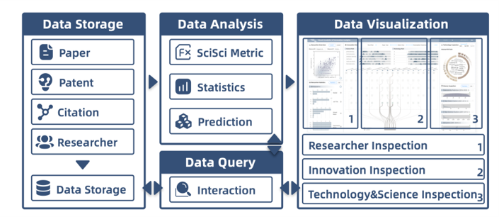
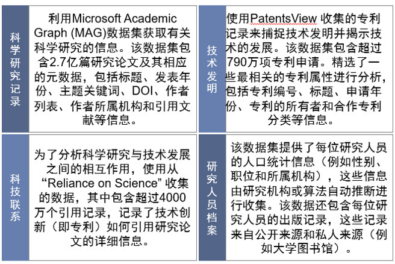
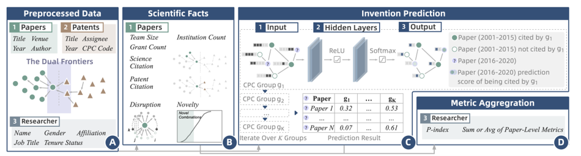
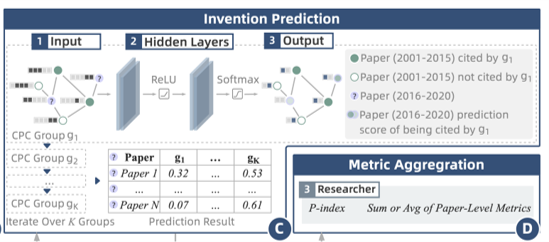
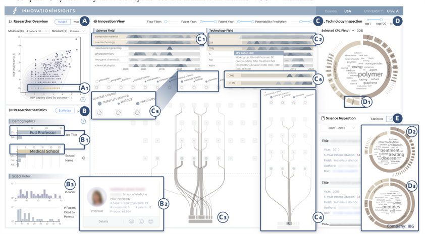
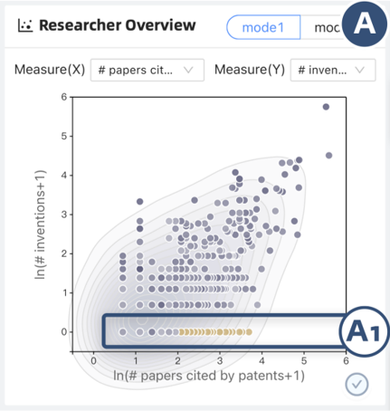
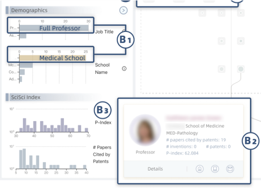
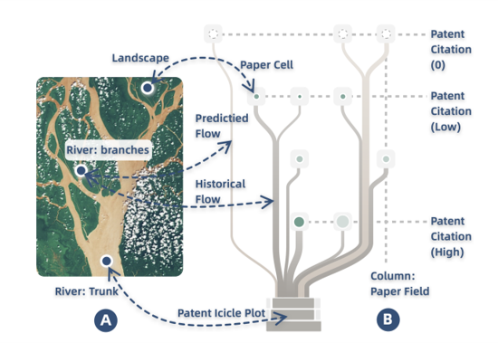
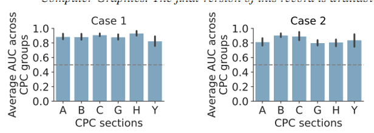

论文：InnovationInsights: A Visual Analytics Approach for Understanding the Dual Frontiers of Science and Technology
作者：Wang Yifang; Qian Yifan; Qi Xiaoyu; Cao Nan; Wang Dashun
发表：VIS 2023
本论文介绍了InnovationInsights，这是一个独一无二的可视化系统，供研究人员和研究机构探索科学和技术之间复杂的相互作用。它通过描述性和预测性分析支持对多个实体（例如研究人员、论文和专利）进行分析。开发了协调的视图和直观的交互，以支持分析。两个案例研究、专家访谈以及与合作大学的合作项目证明了系统的显著实用性和潜在影响。未来，计划整合更多数据并发布一个面向公众使用的在线系统。
背景介绍
- 尽管科学研究推动了基础理解和实际应用，但在探索科学进展和技术发明之间的复杂联系（即双重前沿）方面，缺乏可视化分析方法。
- 更好理解科学和技术双重前沿可以为各个利益相关者提供信息，帮助他们识别创新的差距和机会，并促进知识转移。
- 大规模数据集追踪科学出版物和专利发明以及它们之间的复杂相互作用，为解决这个研究问题提供了新机会。
本文的贡献有3点：
- 形成了科学与技术双重前沿的可视分析领域，并提出了一种新颖的设计来可视化科学与技术之间的复杂交互作用。
- 设计并开发了”InnovationInsights”系统，这是第一个探索上游科学研究和下游
- 进行了全面的评估，包括案例研究和专家访谈，以证明的系统的有效性。
系统概述
“InnovationInsights”被设计成一个在线系统，包括三个模块：(1) 数据存储模块，(2) 数据分析模块，以及(3) 可视化模块。

数据存储模块对来自多个来源的数据进行预处理，并将其存储在数据库中。数据分析模块对不同实体（例如论文、专利和研究人员）进行一系列的测量，并使用预测模型推荐具有高专利潜力的论文。历史数据和预测数据都被输入到数据可视化模块中，以展示直观的数据洞察。
数据存储模块
分析科学和技术双重前沿需要整合来自各种来源的数据，数据源包括科学研究记录，技术发明，科技联系，研究人员档案。

这篇文章从上述数据中提取了一个子集，包括了一个20年的时间段（2001年至2020年）内的论文以及相关的专利和研究人员。
数据分析模块
数据分析模块旨在计算用于可视化分析和决策的上下文信息。具体而言，考虑两种类型的信息：(1) 基于一组统计指标计算的论文、专利、研究人员等数据事实；(2) 科学研究（即论文）的转化潜力，该潜力是通过基于图卷积网络（GCN）实现的深度预测模型估计得出。
数据分析过程

（A）将数据预处理为网络和多维结构。（论文之间的引用关系）
（B）-（C）使用科学事实和论文级别的预测结果构建SciSci指标。
（D）汇总论文的指标，得到研究人员的指标。
论文指标
- 团队规模：论文的共同作者总数。
- 机构数量：论文的共同作者所属不同机构的总数。
- 资助计数：支持该论文研究的赞助项目总数。
- 科学引用：该论文在发表后5年内获得的引用总数。
- 中断：衡量引用某一论文的其他论文在引用该论文的同时是否忽略了该论文的参考文献。【数值越接近1，表示引用该论文的其他论文更倾向于忽略该论文的参考文献；数值越接近0，表示其他论文更倾向于同时引用该论文和其参考文献。】
- 新颖性：度量了焦点论文所组合的现有知识在所有期刊中与常态偏离的程度。
- 专利引用：在焦点论文发表后的5年内引用该论文的专利总数。
作者指标
- 论文数量：研究人员曾发表的论文总数。
- 发明数量：研究人员曾向大学披露的发明公告总数。
- 科学引用：在每篇论文发表后的5年内引用该论文的研究论文数量。
- 被专利引用的论文数量：至少被一项专利引用过的论文总数。
预测潜力指标
估计一篇论文在未来发明中的潜力，可以帮助分析人员确定下一个有前景的研究课题以及潜在的发明者。

该模型基于以下观察而设计：当从科学研究论文中获得的知识被用于技术发明时，该论文将直接被相应的专利引用。因此，使用专利对论文的引用链接作为关键特征，训练了一个图卷积网络（GCN），帮助估计论文P被特定技术领域的专利直接引用的概率有多大，这也由类别标签表示。
为了评估研究人员的整体表现，计算了其论文在不同专利类别下的平均被引用概率，并定义了一个称为P指数的聚合值，用于衡量研究人员的商业化潜力。
可视化模块
可视化系统由五个协调的视图组成。

研究人员概览视图（A）和研究人员统计视图（B）用于个人层面的分析。创新视图（C）展示了科学与技术之间的详细相互作用。技术检查视图（D）和科学检查视图（E）提供了有关专利和论文的附加上下文信息。
用户可以在a视图选择一组研究人员，其科学事实和个人资料信息在b视图中总结为上下文。然后，用户可以根据这些上下文信息筛选出感兴趣的研究人员。C视图中使用两组水平图来展示科学和技术的趋势，通过显示不同领域论文数量的变化和专利数量的变化。用户可以使用这些水平图选择一个时间段来筛选论文或专利。数据筛选出来后，c3视图会通过一个相互作用图可视化所选专利和论文之间的引用关系，揭示科学和技术之间的相互作用。在这个视图中，用户可以通过领域交互式地筛选引用关系，以了解不同粒度的科学-技术连接。为了让用户更好地理解这些连接，d视图会展示所选专利的关键词，e视图会展示所选论文的列表。
研究人员概览视图（A）

每个圆圈代表一个研究人员，透明度表示P指数。使用等高线图显示研究人员的分布。x轴和y轴表示研究人员的两种指标，可以根据用户的偏好进行交互式更改。
研究人员统计视图（B）
该视图总结了所选组的特征和详细的研究人员信息。

它支持两种可视化模式：（1）柱状图和直方图，总结人口统计信息和SciSci指标分布；（2）研究人员卡片，显示研究人员列表可以根据不同的SciSci指标进行排名。
创新视图（C）
该视图是可视化系统中的核心视图。

河流般的视觉隐喻显示了论文和专利之间的引用联系，包括三个部分：论文矩阵、专利冰柱图和引用流。
- 论文矩阵：每一列表示一个研究领域，每一行显示一个数字引用范围，表示该行显示的论文被专利引用的程度。引用数量从上到下递增，即在视图底部的最后一行的论文是被专利引用最多的论文。论文矩阵中的节点表示一组聚合的论文。圆圈的大小表示该组中的论文数量，透明度代表论文的平均专利引用数量。星形标志总结了论文的统计特征。
- 专利冰柱图：使用一个倒置的冰柱图来总结专利CPC分类，该分类属于一个三级层次结构。每个矩形代表一个分类，长度表示该分类中的专利数量。
- 引用流：可视化了从专利到论文的引用链接关系。流的宽度表示专利引用的数量。流越宽，表示该专利分类更多地依赖于与连接的论文集合的知识。将具有相似专利引用的论文领域放在一起。此外还使用了一些优化算法调整排序减少视觉混乱。
评估
潜力预测模型

在两个案例的数据上用auc进行评估，整体预测性能良好，并且在不同的专利组之间保持稳健。
仅使用CPU，每个epoch的训练时间不到10秒。
预测模型是预先执行的，不会实时影响可视化系统。
局限性
- 当前的预测模型依赖于论文之间的引用。未来的工作可以使用针对异构图设计的其他GNN模型，该模型可以纳入不同类型的节点（例如论文和专利）。此外，潜力预测指数是从在2001年至2014年之间发表的论文上训练的GNN模型推导出的，可以通过将最新论文纳入训练数据集来改进。
- 其次，由于数据可用性的限制，我们的研究范围仅限于单个大学或特定领域，并使用来自USPTO的专利数据。未来的研究可以在全球范围内获取专利数据，并扩大合作伙伴关系。
- 第三，当前系统在实时计算结果时存在一定的延迟。计划使用渐进式可视化分析方法来解决这个问题。
总结
本论文介绍了InnovationInsights，这是一个独一无二的可视化系统，供研究人员和研究机构探索科学和技术之间复杂的相互作用。
它通过描述性和预测性分析支持对多个实体（例如研究人员、论文和专利）进行分析。开发了协调的视图和直观的交互，以支持分析。两个案例研究、专家访谈以及与合作大学的合作项目证明了系统的显著实用性和潜在影响。未来，计划整合更多数据并发布一个面向公众使用的在线系统。
✉️ zjuvis@cad.zju.edu.cn